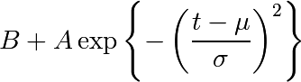
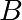
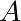
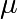
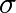

7.12.6. Non linear least squares curve fitting: application to point extraction in topographical lidar data¶
The goal of this exercise is to fit a model to some data. The data used in this tutorial are lidar data and are described in details in the following introductory paragraph. If you’re impatient and want to practise now, please skip it ang go directly to Loading and visualization.
7.12.6.1. Introduction¶
Lidars systems are optical rangefinders that analyze property of scattered light to measure distances. Most of them emit a short light impulsion towards a target and record the reflected signal. This signal is then processed to extract the distance between the lidar sytem and the target.
Topographical lidar systems are such systems embedded in airborne platforms. They measure distances between the platform and the Earth, so as to deliver information on the Earth’s topography (see [Mallet09] for more details).
In this tutorial, the goal is to analyze the waveform recorded by the lidar system [1]. Such a signal contains peaks whose center and amplitude permit to compute the position and some characteristics of the hit target. When the footprint of the laser beam is around 1m on the Earth surface, the beam can hit multiple targets during the two-way propagation (for example the ground and the top of a tree or building). The sum of the contributions of each target hit by the laser beam then produces a complex signal with multiple peaks, each one containing information about one target.
One state of the art method to extract information from these data is to decompose them in a sum of Gaussian functions where each function represents the contribution of a target hit by the laser beam.
Therefore, we use the scipy.optimize module to fit a waveform to one or a sum of Gaussian functions.
7.12.6.2. Loading and visualization¶
Load the first waveform using:
>>> import numpy as np
>>> waveform_1 = np.load('data/waveform_1.npy')
and visualize it:
>>> import matplotlib.pyplot as plt
>>> t = np.arange(len(waveform_1))
>>> plt.plot(t, waveform_1)
>>> plt.show()

As you can notice, this waveform is a 80-bin-length signal with a single peak.
7.12.6.3. Fitting a waveform with a simple Gaussian model¶
The signal is very simple and can be modelled as a single Gaussian function and an offset corresponding to the background noise. To fit the signal with the function, we must:
- define the model
- propose an initial solution
- call scipy.optimize.leastsq
7.12.6.3.1. Model¶
A gaussian function defined by

can be defined in python by:
>>> def model(t, coeffs):
... return coeffs[0] + coeffs[1] * np.exp( - ((t-coeffs[2])/coeffs[3])**2 )
where
- coeffs[0] is  (noise)
- coeffs[1] is  (amplitude)
- coeffs[2] is  (center)
- coeffs[3] is  (width)
7.12.6.3.2. Initial solution¶
An approximative initial solution that we can find from looking at the graph is for instance:
>>> x0 = np.array([3, 30, 15, 1], dtype=float)
7.12.6.3.3. Fit¶
scipy.optimize.leastsq minimizes the sum of squares of the function given as an argument. Basically, the function to minimize is the residuals (the difference between the data and the model):
>>> def residuals(coeffs, y, t):
... return y - model(t, coeffs)
So let’s get our solution by calling scipy.optimize.leastsq with the following arguments:
- the function to minimize
- an initial solution
- the additional arguments to pass to the function
>>> from scipy.optimize import leastsq
>>> x, flag = leastsq(residuals, x0, args=(waveform_1, t))
>>> print x
[ 2.70363341 27.82020742 15.47924562 3.05636228]
And visualize the solution:
>>> plt.plot(t, waveform_1, t, model(t, x))
>>> plt.legend(['waveform', 'model'])
>>> plt.show()
Remark: from scipy v0.8 and above, you should rather use scipy.optimize.curve_fit which takes the model and the data as arguments, so you don’t need to define the residuals any more.
7.12.6.4. Going further¶
- Try with a more complex waveform (for instance data/waveform_2.npy) that contains three significant peaks. You must adapt the model which is now a sum of Gaussian functions instead of only one Gaussian peak.

In some cases, writing an explicit function to compute the Jacobian is faster than letting leastsq estimate it numerically. Create a function to compute the Jacobian of the residuals and use it as an input for leastsq.
When we want to detect very small peaks in the signal, or when the initial guess is too far from a good solution, the result given by the algorithm is often not satisfying. Adding constraints to the parameters of the model enables to overcome such limitations. An example of a priori knowledge we can add is the sign of our variables (which are all positive).
With the following initial solution:
>>> x0 = np.array([3, 50, 20, 1], dtype=float)
compare the result of scipy.optimize.leastsq and what you can get with scipy.optimize.fmin_slsqp when adding boundary constraints.
| [1] | The data used for this tutorial are part of the demonstration data available for the FullAnalyze software and were kindly provided by the GIS DRAIX. |
| [Mallet09] | Mallet, C. and Bretar, F. Full-Waveform Topographic Lidar: State-of-the-Art. ISPRS Journal of Photogrammetry and Remote Sensing 64(1), pp.1-16, January 2009 http://dx.doi.org/10.1016/j.isprsjprs.2008.09.007 |